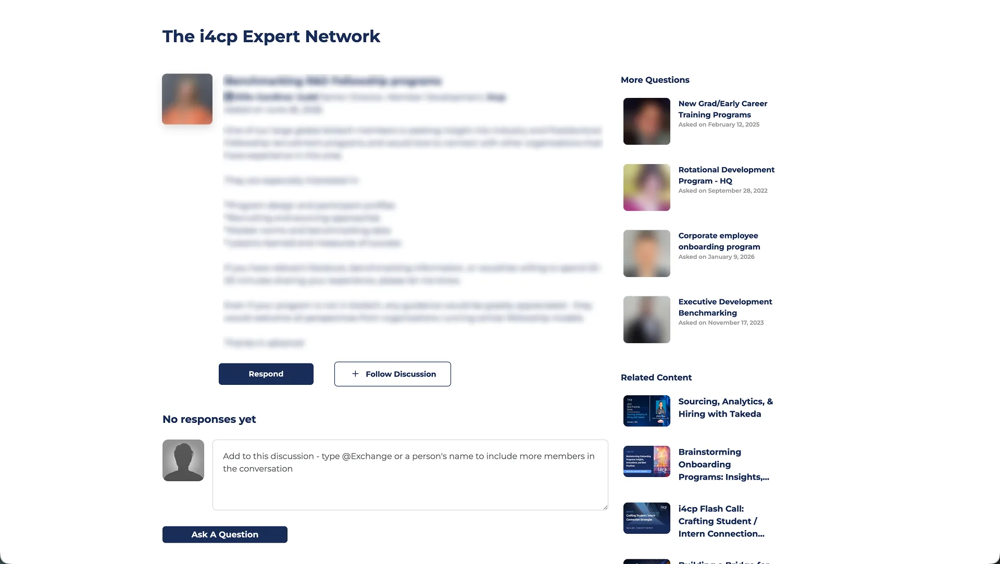
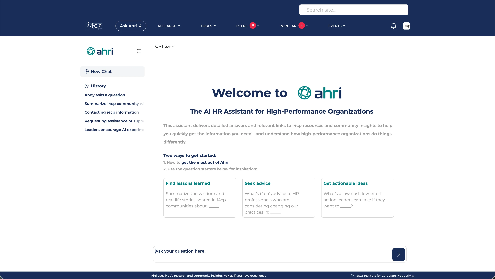

Member Portal Growth Overhaul
For a research membership business, navigation is everything. Our old taxonomy was so tangled that members assumed we just didn't have content for their specific roles or industries. Many just stopped logging in.
I overhauled the portal's architecture and core experience so members could actually find what they were paying for. We replaced the traditional search bar with an AI discovery engine and built a navigation model that mirrors how HR leaders actually talk about their work.
At a glance
- Business Problem: Engagement was suffering because the portal exposed too much complexity upfront. Many members weren't using the site at all, falsely assuming we lacked content curated for their specific role, industry, or company size.
- My Hypothesis: If we matched the navigation to how HR leaders actually think and speak, and put our AI assistant (Ahri) front and center, members would find relevant reports faster and stick around longer.
- Outcomes: We shipped in September 2026. AI usage jumped 500%, and we were able to completely ditch the traditional search bar with almost zero complaints from members.
Problem
Members came to i4cp for reports, benchmarks, and peer insights, but the portal's information architecture made that value incredibly hard to reach. The friction was so high that lots of members weren't using the site at all—they just assumed we didn't have content curated for their specific roles or company sizes.
The data backed this up: few people were using our AI feature (Ahri). Most members were just using the traditional search bar as a crutch to bypass the broken navigation. My challenge was turning a massive, confusing repository into a structure where someone could log in and immediately find an insight for their exact role.
Goals
- Make content discovery obvious: Restructure the portal to match how members actually think and speak in their day-to-day HR roles.
- Drive AI adoption: Shift user behavior away from traditional search and get them using the AI discovery tool.
- Ship a meaningful MVP: Improve navigation, hierarchy, and visual clarity immediately without waiting for every portal surface to be redesigned.
Research
The taxonomy itself was not something I needed to reinvent. Our researchers had identified a new taxonomy that was already in progress when I joined. The design problem was translation: how to make that validated 4-level structure visible and usable inside the product. I designed a navigation model that exposed the right level of depth at the right moment.
Moderated validation testing with active members is planned for July, focused on task success across the four IA levels.


The IA Challenge: Four Levels Without Losing the Thread
The content model moved from broad member intent to specific resources across four levels: Areas of Focus, Priorities, Topics, and individual content. Previously, members had to understand i4cp's internal structure to navigate that depth. The redesign shifted the experience toward how HR leaders already think about their work.
Previously, users had to understand i4cp's structure. The redesign makes the structure match how members already think.
Content hierarchy
The model moves from broad member intent to specific resources across four levels.
The broadest practice domains (e.g. leadership, talent, culture)
The strategic questions within each area
Specific subject clusters within each priority
Articles, videos, webinars, benchmarks
For example, a member looking for leadership succession benchmarking might start with Leadership as a broad area, narrow into a strategic priority, scan related topics, and then choose between reports, benchmarks, webinars, or peer discussion content. The navigation needed to support that narrowing path without exposing the entire taxonomy at once.
Defining decision
Progressive disclosure over flat navigation.
Exposes too much structure at once, creating a noisy entry point for members who need a clear next step.
Reveals deeper levels only as members commit to a practice area or priority.
I explored flatter navigation patterns, including an expandable-tree model, but they exposed too much hierarchy at once and made the entry point harder to scan. Progressive disclosure preserved access to the full taxonomy while revealing deeper levels only as members narrowed their intent.
Areas of Focus orient members at the top level, while Priorities and Topics appear as they move closer to a specific research need. The goal was to make four levels feel like a path, not a taxonomy buried in dropdowns.


Constraints
- Parallel rebrand: A third-party consultant was evolving i4cp's visual identity at the same time. Instead of rebuilding tokens from scratch, I mapped the new direction to the existing token structure so the MVP could keep moving.
- MVP scope: A full IA overhaul touches nearly every portal surface, so I phased the work deliberately. The MVP ships restructured navigation and a refreshed visual system, with deeper workflow improvements already designed and ticketed for post-MVP.
Deferred enhancements
Potential enhancements included AI-assisted summaries, natural-language discovery, enhanced search, and higher-fidelity interactions.
These were deferred to prioritize foundational discoverability and navigation improvements first.
Outcomes & Impact
The redesigned portal shipped to production in September 2026. By untangling the complex information architecture and aligning the navigation to our users' mental models, we successfully removed the friction that was causing early member churn.
Usage jumped 500% in the first month just by putting AI discovery front and center.
Bridged the gap so well we removed the traditional keyword search bar.
Content consumption indicators increased, proving members were actually finding value.
Stakeholder Alignment: Killing the Search Bar
Killing a core feature like a traditional search bar is usually a tough sell. The C-suite wanted to push users toward AI anyway, but there were initial talks of a compromise—keeping both and just emphasizing the AI.
I made the argument that we didn't need both. Instead, I designed fallback logic into the AI itself: if a user types a keyword (like "AI in HR") instead of a prompt ("Tell me about AI in HR"), the AI just acts like a traditional search engine. That logic satisfied leadership's fears, kept the UI clean, and is why we heard almost zero complaints when we finally ditched the old search bar.
The "Aha!" Moment
For a premium research portal, the critical "Aha!" moment isn't just logging in—it's the exact moment a member successfully filters through thousands of documents to find a highly relevant benchmark or report perfectly curated for their specific sub-discipline, company size, and industry.
By untangling the architecture, we made it significantly faster for members to reach that moment, which directly protects our long-term retention.